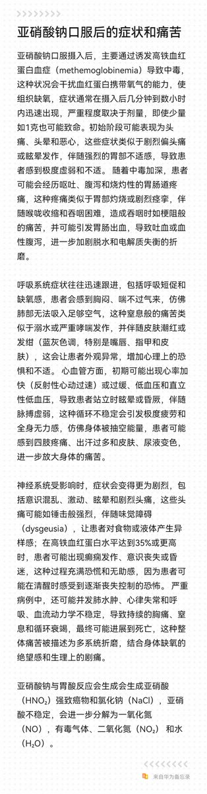

鼠尾草～🌿
@SalviaSWC
RT @SPYDER_AIO: 见到了很多吃亚硝酸钠离开的人
也看到了无数想要重蹈覆辙的人
我作为一个吃过亚硝酸钠的前辈来说，亚硝酸钠真的非常痛苦
它并非网上所传的自杀圣物，相反，它的过程非常的无助且痛苦，且病人会全程保持清醒意识目睹这一切
我真的难以想象，那些服下亚硝酸钠的人…

SPYDER AIO SPAA SYSTEM🍥🏳️⚧️
@SPYDER_AIO
见到了很多吃亚硝酸钠离开的人
也看到了无数想要重蹈覆辙的人
我作为一个吃过亚硝酸钠的前辈来说，亚硝酸钠真的非常痛苦
它并非网上所传的自杀圣物，相反，它的过程非常的无助且痛苦，且病人会全程保持清醒意识目睹这一切
我真的难以想象，那些服下亚硝酸钠的人会有多痛苦
Susie，阿兰，我想你了
求转 https://t.co/NgLdSzU7QI https://t.co/mKvZqyUC9a